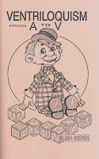

Style
4/16/2010
By William H. Andersen
Every entertainer should try to develop a style of his own. There are many similarities and commonalities among ventriloquists, but there is room for differences. If you were to go to the ventriloquist convention and see ventriloquist perform one after another, they soon seem like they are all the same. They use similar figures, similar routines, and in fact, they are very similar. Then someone does something different and everyone notices it immediately. That difference is in style.
Style is something which sets one apart from the rest. It is some distinctive characteristic or manner which elevates that person above the others. It could be in the dress of the person, in the character he uses for a partner, in his superior speech patterns, the material he uses, the depth of his presentation, or some other trait that is different.
Some of the best ventriloquists are those who do not fit the mold. The really good ones develop their own presentations rather than just copying others. It is rather difficult to be better and still be the same. Work on some phase of the art in which you can be superior.
Naturally, audiences will expect a ventriloquist to do certain things. Your job is to find a way to do those things in a new or different way to set you apart from the others. Think about your other talents to see if they could be incorporated into your act. Can you think of a different kind of puppet you could develop? Are there ways of showing the ventriloquial art which have not been done yet? Be innovative, work on developing your own style.
* * * * * *
"Ventriloquism From A-V", is now listed with more than thirty 99 cent ventriloquist book auctions on eBay. See them all Here.
Every entertainer should try to develop a style of his own. There are many similarities and commonalities among ventriloquists, but there is room for differences. If you were to go to the ventriloquist convention and see ventriloquist perform one after another, they soon seem like they are all the same. They use similar figures, similar routines, and in fact, they are very similar. Then someone does something different and everyone notices it immediately. That difference is in style.
Style is something which sets one apart from the rest. It is some distinctive characteristic or manner which elevates that person above the others. It could be in the dress of the person, in the character he uses for a partner, in his superior speech patterns, the material he uses, the depth of his presentation, or some other trait that is different.
Some of the best ventriloquists are those who do not fit the mold. The really good ones develop their own presentations rather than just copying others. It is rather difficult to be better and still be the same. Work on some phase of the art in which you can be superior.
{kind=link}

Naturally, audiences will expect a ventriloquist to do certain things. Your job is to find a way to do those things in a new or different way to set you apart from the others. Think about your other talents to see if they could be incorporated into your act. Can you think of a different kind of puppet you could develop? Are there ways of showing the ventriloquial art which have not been done yet? Be innovative, work on developing your own style.
* * * * * *
"Ventriloquism From A-V", is now listed with more than thirty 99 cent ventriloquist book auctions on eBay. See them all Here.